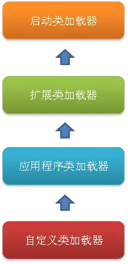

<!DOCTYPE HTML>
<html lang="">
<head><meta name="generator" content="Hexo 3.8.0">
    <!--Setting-->
    <meta charset="UTF-8">
    <meta name="viewport" content="width=device-width, user-scalable=no, initial-scale=1.0, maximum-scale=1.0, minimum-scale=1.0">
    <meta http-equiv="X-UA-Compatible" content="IE=Edge,chrome=1">
    <meta http-equiv="Cache-Control" content="no-siteapp">
    <meta http-equiv="Cache-Control" content="no-transform">
    <meta name="renderer" content="webkit|ie-comp|ie-stand">
    <meta name="apple-mobile-web-app-capable" content="杨柳潇的博客">
    <meta name="apple-mobile-web-app-status-bar-style" content="black">
    <meta name="format-detection" content="telephone=no,email=no,adress=no">
    <meta name="browsermode" content="application">
    <meta name="screen-orientation" content="portrait">
    <link rel="dns-prefetch" href="http://yangliuxiao.top">
    <!--SEO-->

    <meta name="keywords" content="Java,面试,JVM">


    <meta name="description" content="Java语言无关性的基石
虚拟机类加载机制

类的生命周期
类的引用场景

类加载的过程
类加载器

类加载器的种类
双亲委派模型


无关性的基石
Sun公司以及其他VM提供商发布了许多可以运...">


<meta name="robots" content="all">
<meta name="google" content="all">
<meta name="googlebot" content="all">
<meta name="verify" content="all">

    <!--Title-->


<title>深入理解Java虚拟机（四） | 杨柳潇的博客</title>


    <link rel="alternate" href="/atom.xml" title="杨柳潇的博客" type="application/atom+xml">


    <link rel="icon" href="/favicon.jpg">

    


<link rel="stylesheet" href="/css/bootstrap.min.css?rev=3.3.7">
<link rel="stylesheet" href="/css/font-awesome.min.css?rev=4.5.0">
<link rel="stylesheet" href="/css/style.css?rev=@@hash">


    
	<div class="hide">
		<script type="text/javascript">
			var cnzz_protocol = (("https:" == document.location.protocol) ? " https://" : " http://");document.write(unescape("%3Cspan class='cnzz_stat_icon_1263868967 hide' %3E%3Cscript%20src%3D%22https%3A%2F%2Fs95.cnzz.com%2Fz_stat.php%3Fweb_id%3D1272564536%22%3E%3C%2Fscript%3E%3C/span%3E%3Cscript src='" + cnzz_protocol + "s19.cnzz.com/z_stat.php%3Fid%3D1263868967%26show%3Dpic1' type='text/javascript'%3E%3C/script%3E"));
		</script>
	</div>


    

</head>

</html>
<!--[if lte IE 8]>
<style>
    html{ font-size: 1em }
</style>
<![endif]-->
<!--[if lte IE 9]>
<div style="ie">你使用的浏览器版本过低，为了你更好的阅读体验，请更新浏览器的版本或者使用其他现代浏览器，比如Chrome、Firefox、Safari等。</div>
<![endif]-->

<body>
    <header class="main-header" style="background-image:url(/./img/background.jpg)">
    <div class="main-header-box">
        <a class="header-avatar" href="/" title="Mute">
            
        </a>
        <div class="branding">
        	<!--<h2 class="text-hide">Snippet主题,从未如此简单有趣</h2>-->
            
                 
            
    	</div>
    </div>
</header>
    <nav class="main-navigation">
    <div class="container">
        <div class="row">
            <div class="col-sm-12">
                <div class="navbar-header"><span class="nav-toggle-button collapsed pull-right" data-toggle="collapse" data-target="#main-menu" id="mnav">
                    <span class="sr-only"></span>
                        <i class="fa fa-bars"></i>
                    </span>
                    <a class="navbar-brand" href="http://yangliuxiao.top">杨柳潇的博客</a>
                </div>
                <div class="collapse navbar-collapse" id="main-menu">
                    <ul class="menu">
                        
                            <li role="presentation" class="text-center">
                                <a href="/"><i class="fa "></i>Home</a>
                            </li>
                        
                            <li role="presentation" class="text-center">
                                <a href="/archives/"><i class="fa "></i>时间轴</a>
                            </li>
                        
                    </ul>
                </div>
            </div>
        </div>
    </div>
</nav>
    <section class="content-wrap">
        <div class="container">
            <div class="row">
                <main class="col-md-8 main-content m-post">
                    <p id="process"></p>
<article class="post">
    <div class="post-head">
        <h1 id="深入理解Java虚拟机（四）">
            
	            深入理解Java虚拟机（四）
            
        </h1>
        <div class="post-meta">
    
        <span class="categories-meta fa-wrap">
            <i class="fa fa-folder-open-o"></i>
            <a class="category-link" href="/categories/JVM/">JVM</a>
        </span>
    

    
        <span class="fa-wrap">
            <i class="fa fa-tags"></i>
            <span class="tags-meta">
                
                    <a class="tag-link" href="/tags/JVM/">JVM</a> <a class="tag-link" href="/tags/Java/">Java</a> <a class="tag-link" href="/tags/面试/">面试</a>
                
            </span>
        </span>
    

    
        
        <span class="fa-wrap">
            <i class="fa fa-clock-o"></i>
            <span class="date-meta">2018/05/25</span>
        </span>
        
    
</div>
            
            
    </div>
    
    <div class="post-body post-content">
        <p><a href="#无关性的基石">Java语言无关性的基石</a></p>
<p><a href="#虚拟机类加载机制">虚拟机类加载机制</a></p>
<blockquote>
<p><a href="#类的生命周期">类的生命周期</a></p>
<p><a href="#类的引用场景">类的引用场景</a></p>
</blockquote>
<p><a href="#类加载的过程">类加载的过程</a></p>
<p><a href="#类加载器">类加载器</a></p>
<blockquote>
<p><a href="#类加载器的种类">类加载器的种类</a></p>
<p><a href="#双亲委派模型">双亲委派模型</a></p>
</blockquote>
<hr>
<h3 id="无关性的基石"><a href="#无关性的基石" class="headerlink" title="无关性的基石"></a>无关性的基石</h3><ul>
<li><p>Sun公司以及其他VM提供商发布了许多可以运行在各种不同平台上的虚拟机，这些虚拟机都可以载入和执行同一种平台无关的<strong>字节码</strong>，实现了程序的“<strong>一次编写，到处运行</strong>”。</p>
</li>
<li><p>实现平台、语言无关性的基础是：<strong>虚拟机</strong>和<strong>字节码存储格式</strong></p>
</li>
<li><p>Java VM不和任何语言绑定，只与“Class文件”这种特定的二进制文件格式关联，VM<strong>不关心Class文件的来源</strong>，使用JRuby等其他语言的编译器一样可以把程序代码编译成Class文件。</p>
</li>
</ul>
<hr>
<h3 id="虚拟机类加载机制"><a href="#虚拟机类加载机制" class="headerlink" title="虚拟机类加载机制"></a>虚拟机类加载机制</h3><p>VM把描述类的数据从Class字节码文件加载到内存，并对数据进行校验、转换解析和初始化，最终形成可以被虚拟机直接使用的Java类型，这就是<strong>虚拟机的类加载机制</strong>。</p>
<p>与在编译时进行连接工作的语言不同，在Java语言里，类型的加载、连接、初始化都是在<strong>程序运行期</strong>完成的。虽然<strong>稍微地增加了性能开销，但提供了高度的灵活性</strong>，Java<strong>动态扩展</strong>的语言特性就是依赖运行期动态加载和动态连接这个特点实现的。例如编写一个面向接口的应用程序，等到运行时再指定其实际的实现类；或者通过预定义的和自定义的类加载器，让一个本地的应用程序在运行时从网络或他处加载一个二进制流作为程序代码的一部分（Applet、Jsp、OSGi）</p>
<h4 id="类的生命周期"><a href="#类的生命周期" class="headerlink" title="类的生命周期"></a>类的生命周期</h4><blockquote>
<p><strong>加载 —&gt; 验证 —&gt; 准备 —&gt; 解析 —&gt; 初始化 —&gt; 使用 —&gt; 卸载</strong></p>
<p><strong>（验证、准备、解析统称为连接）</strong></p>
<p>除了解析阶段，其他阶段都按这个顺序<strong>开始</strong>（不一定等前一个阶段结束，都一个阶段才开始，通常<strong>互相交叉地混合式</strong>进行），而解析阶段则不一定，某些情况下可以在初始化之后再开始（Java的<strong>运行时绑定</strong>，也称为动态绑定或晚期绑定）</p>
</blockquote>
<h4 id="类的引用场景"><a href="#类的引用场景" class="headerlink" title="类的引用场景"></a>类的引用场景</h4><ul>
<li><strong>对类进行主动引用</strong></li>
</ul>
<p>虚拟机规范中规定<strong>“有且只有”</strong>这5种场景会触发类初始化（而加载、验证、准备自然在此之前开始）</p>
<blockquote>
<p><strong>①</strong>遇到new、getstatic、putstatic、invokestatic这四条字节码指令时，如果类没有进行过初始化，则先初始化。生成这四条指令常见的Java场景是：<strong>new关键字实例化对象时、读取或设置类的静态字段时（final修饰、已在编译期放入常量池的静态字段除外）、调用一个类的静态方法</strong>时。</p>
<p><strong>②</strong>使用java.lang.reflect包的方法对类进行<strong>反射调用</strong>的时候，若未初始化，则初始化。</p>
<p><strong>③</strong>当初始化一个类时，发现其<strong>父类还未初始化</strong>，则先触发其父类的初始化。</p>
<blockquote>
<p><strong>接口与类初始化的区别</strong>：接口在初始化时，并不要求其父接口全部都完成了初始化，只有在真正使用到父接口时才会初始化。</p>
</blockquote>
<p><strong>④</strong>虚拟机启动时，会先初始化<strong>主类</strong>（包含main()方法的那个类）</p>
<p><strong>⑤</strong>当使用JDK1.7的<strong>动态语言支持</strong>时，如果一个java.lang.invoke.MethodHandle实例最后的解析结果REF_getStatic、REF_putStatic、REF_invokeStatic的方法句柄，并且这个句柄对应的类没有进行过初始化，则先初始化。（<del>没怎么看懂，动态连接的时候发现类未初始化？</del>）</p>
</blockquote>
<ul>
<li><strong>被动引用</strong></li>
</ul>
<p>除以上5种主动引用的场景外，其他所有引用类的方式都不会触发初始化，称为<strong>被动引用</strong>。</p>
<blockquote>
<p><strong>①通过子类引用父类的静态字段，不会导致子类初始化。</strong> 对于static字段，只有直接定义这个字段的类才会被初始化，因此通过其子类来引用父类中定义的静态字段，只会触发父类的初始化，而不会触发子类初始化</p>
<figure class="highlight java"><table><tr><td class="gutter"><pre><span class="line">1</span><br><span class="line">2</span><br><span class="line">3</span><br><span class="line">4</span><br><span class="line">5</span><br><span class="line">6</span><br><span class="line">7</span><br><span class="line">8</span><br><span class="line">9</span><br><span class="line">10</span><br><span class="line">11</span><br><span class="line">12</span><br><span class="line">13</span><br><span class="line">14</span><br><span class="line">15</span><br><span class="line">16</span><br><span class="line">17</span><br><span class="line">18</span><br><span class="line">19</span><br><span class="line">20</span><br><span class="line">21</span><br></pre></td><td class="code"><pre><span class="line">&gt; <span class="comment">//父类</span></span><br><span class="line">&gt; <span class="keyword">public</span> <span class="class"><span class="keyword">class</span> <span class="title">SuperClass</span></span>&#123;</span><br><span class="line">&gt;      <span class="keyword">static</span> &#123;</span><br><span class="line">&gt;          System.out.println(<span class="string">"SuperClass init!"</span>);</span><br><span class="line">&gt;      &#125;</span><br><span class="line">&gt;       <span class="keyword">public</span> <span class="keyword">static</span> <span class="keyword">int</span> value = <span class="number">123</span>;</span><br><span class="line">&gt; &#125;</span><br><span class="line">&gt; </span><br><span class="line">&gt; <span class="comment">//子类</span></span><br><span class="line">&gt; <span class="keyword">public</span> <span class="class"><span class="keyword">class</span> <span class="title">SubClass</span> <span class="keyword">extends</span> <span class="title">SuperClass</span></span>&#123;</span><br><span class="line">&gt;      <span class="keyword">static</span> &#123;</span><br><span class="line">&gt;          System.out.println(<span class="string">"SubClass init!"</span>);</span><br><span class="line">&gt;      &#125;</span><br><span class="line">&gt; &#125;</span><br><span class="line">&gt; </span><br><span class="line">&gt; <span class="keyword">public</span> <span class="class"><span class="keyword">class</span> <span class="title">NotInitialization</span> </span>&#123;</span><br><span class="line">&gt;      <span class="function"><span class="keyword">public</span> <span class="keyword">static</span> <span class="keyword">void</span> <span class="title">main</span><span class="params">(String[] args)</span></span>&#123;</span><br><span class="line">&gt;          System.out.println(SubClass.value);</span><br><span class="line">&gt;      &#125;</span><br><span class="line">&gt; &#125;</span><br><span class="line">&gt;</span><br></pre></td></tr></table></figure>
<p>输出</p>
<figure class="highlight java"><table><tr><td class="gutter"><pre><span class="line">1</span><br><span class="line">2</span><br><span class="line">3</span><br></pre></td><td class="code"><pre><span class="line">&gt; SuperClass init!</span><br><span class="line">&gt; <span class="number">123</span></span><br><span class="line">&gt;</span><br></pre></td></tr></table></figure>
<hr>
<p><strong>②通过数组定义来引用类，不会触发此类的初始化</strong></p>
<figure class="highlight java"><table><tr><td class="gutter"><pre><span class="line">1</span><br><span class="line">2</span><br><span class="line">3</span><br><span class="line">4</span><br><span class="line">5</span><br></pre></td><td class="code"><pre><span class="line">&gt; <span class="keyword">public</span> <span class="class"><span class="keyword">class</span> <span class="title">NotInitialization</span> </span>&#123;</span><br><span class="line">&gt;      <span class="function"><span class="keyword">public</span> <span class="keyword">static</span> <span class="keyword">void</span> <span class="title">main</span><span class="params">(String[] args)</span></span>&#123;</span><br><span class="line">&gt;          SuperClass[] s = <span class="keyword">new</span> SuperClass[<span class="number">10</span>];</span><br><span class="line">&gt;      &#125;</span><br><span class="line">&gt;</span><br></pre></td></tr></table></figure>
<p>运行之后<strong>没有输出</strong> SuperClass init！</p>
<hr>
<p>③<strong>常量</strong>在编译阶段会存入调用类的常量池中（编译阶段通过常量传播优化），本质上并没有直接引用到定义常量的类，因此不会触发定义常量的类的初始化。</p>
<figure class="highlight java"><table><tr><td class="gutter"><pre><span class="line">1</span><br><span class="line">2</span><br><span class="line">3</span><br><span class="line">4</span><br><span class="line">5</span><br><span class="line">6</span><br><span class="line">7</span><br><span class="line">8</span><br><span class="line">9</span><br><span class="line">10</span><br><span class="line">11</span><br><span class="line">12</span><br><span class="line">13</span><br><span class="line">14</span><br></pre></td><td class="code"><pre><span class="line">&gt; <span class="keyword">public</span> <span class="class"><span class="keyword">class</span> <span class="title">ConstClass</span></span>&#123;</span><br><span class="line">&gt;     <span class="keyword">static</span>&#123;</span><br><span class="line">&gt;         System.out.println(<span class="string">"ConstClass init!"</span>);</span><br><span class="line">&gt;     &#125;</span><br><span class="line">&gt; </span><br><span class="line">&gt;     <span class="keyword">public</span> <span class="keyword">static</span> <span class="keyword">final</span> String HELLOWORLD = <span class="string">"hello world"</span>;</span><br><span class="line">&gt; &#125;</span><br><span class="line">&gt; </span><br><span class="line">&gt; <span class="keyword">public</span> <span class="class"><span class="keyword">class</span> <span class="title">NotInitialization</span></span>&#123;</span><br><span class="line">&gt;     <span class="function"><span class="keyword">public</span> <span class="keyword">static</span> <span class="keyword">void</span> <span class="title">main</span><span class="params">(String[] args)</span></span>&#123;</span><br><span class="line">&gt;         System.out.println(ConstClass.HELLOWORLD);</span><br><span class="line">&gt;     &#125;</span><br><span class="line">&gt; &#125;</span><br><span class="line">&gt;</span><br></pre></td></tr></table></figure>
<p>运行之后<strong>没有输出</strong> SuperClass init！</p>
<p>编译阶段，此常量HELLOWORLD的值已经被存储到了<strong>NotInitialization类的常量池</strong>中，之后NotInitialization对ConstClass.HELLOWORLD的引用实际都被转换为对自身常量池的引用了，也就是说，NotInitialization的Class文件中并没有ConstClass类的符号引用入口，<strong>这两个类在编译成Class之后就不存在任何联系了</strong>。</p>
</blockquote>
<hr>
<h3 id="类加载的过程"><a href="#类加载的过程" class="headerlink" title="类加载的过程"></a>类加载的过程</h3><p><strong>加载 —&gt; 验证 —&gt; 准备 —&gt; 解析 —&gt; 初始化 —&gt; 使用 —&gt; 卸载</strong></p>
<p> <strong>1.  加载</strong></p>
<blockquote>
<p>在加载阶段，虚拟机完成以下3件事：</p>
<p>①通过一个类的全限定名来获取定义此类的二进制字节流</p>
<p>②将字节流代表的静态存储结构转化为方法区的运行时数据结构</p>
<p>③在内存生成该类的java.lang.Class对象，作为方法区这个类的各种数据的访问入口</p>
</blockquote>
<p> <strong>2. 验证</strong></p>
<blockquote>
<p><strong>①目的：</strong>验证的目的是为了确保Class文件的字节流中包含的信息符合当前虚拟机的要求，并且不会危害虚拟机自身的安全。</p>
<p>②Java语言本身是安全的，编译器将拒绝编译不安全的行为（访问数组越界……）但<strong>Class文件不一定由源代码编译而来</strong>，甚至可以直接编写Class文件，所以验证是VM对自身保护的重要工作。</p>
<p>③验证包括：文件格式验证（是否符合Class文件格式）、元数据验证（语义校验，保证元数据符合Java语言规范）、字节码验证、符号引用验证</p>
</blockquote>
<p> <strong>3. 准备</strong></p>
<blockquote>
<p>①是正式为<strong>类变量（static）分配内存并设置变量初始值阶段</strong>，这些变量所使用的内存都将在<strong>方法区</strong>中进行分配，注意这时候分配的<strong>是类变量不是实例变量</strong>，实例变量将在对象实例化时与对象一起分配在java堆中</p>
<p>②<strong>初始值</strong>是指对应类型的<strong>零值</strong>（<strong>特殊情况：</strong>被final修饰的变量，如public static final int value = 123； 则会在准备阶段即赋值123.</p>
<div class="table-container">
<table>
<thead>
<tr>
<th>数据类型</th>
<th>零值</th>
<th>最大值</th>
<th>最小值</th>
<th>说明</th>
</tr>
</thead>
<tbody>
<tr>
<td>boolean</td>
<td>false</td>
<td>true</td>
<td>false</td>
<td><strong>一位</strong>的信息,只作为一种标志来记录 true/false 情况</td>
</tr>
<tr>
<td>byte</td>
<td>0</td>
<td>127(2^7-1)</td>
<td>-128(-2^7)</td>
<td><strong>8位</strong>、有符号的，以二进制补码表示的整数</td>
</tr>
<tr>
<td>short</td>
<td>0</td>
<td>32767(2^15-1)</td>
<td>-32768(-2^15)</td>
<td><strong>16 位</strong>、有符号的以二进制补码表示的整数</td>
</tr>
<tr>
<td>char</td>
<td>\u0000</td>
<td>\uffff(65535)</td>
<td>\u0000(0)</td>
<td>单一的 <strong>16 位</strong> Unicode 字符,可以储存任何字符</td>
</tr>
<tr>
<td>int</td>
<td>0</td>
<td>2^31-1</td>
<td>-2^31</td>
<td><strong>32位</strong>、有符号的以二进制补码表示的整数</td>
</tr>
<tr>
<td>float</td>
<td>0.0f</td>
<td>2^128-1</td>
<td>2^-149</td>
<td>单精度、<strong>32位</strong>、符合IEEE 754标准的浮点数</td>
</tr>
<tr>
<td>long</td>
<td>0L</td>
<td>-2^63</td>
<td>2^63-1</td>
<td><strong>64 位</strong>、有符号的以二进制补码表示的整数</td>
</tr>
<tr>
<td>double</td>
<td>0.0d</td>
<td>2^1024-1</td>
<td>2^-1024</td>
<td>双精度、<strong>64 位</strong>、符合IEEE 754标准的浮点数</td>
</tr>
</tbody>
</table>
</div>
</blockquote>
<p> <strong>4. 解析</strong></p>
<blockquote>
<p>①解析阶段是虚拟机将常量池的符号引用替换为直接引用的过程</p>
<p>②<strong>符号引用</strong>是以一组符号来描述所引用的目标，<strong>直接引用</strong>则是直接指向目标的指针、相对偏移量或是一个能直接定位到目标的句柄</p>
<p>③解析包括：类或接口的解析，字段解析，类方法解析，接口方法解析</p>
<p>④同一个符号引用在不同VM翻译出的直接引用一般不同，<strong>若有了直接引用，则引用目标必已存在内存中</strong></p>
</blockquote>
<p> <strong>5. 初始化</strong></p>
<blockquote>
<p>”初始化阶段“是根据<strong>程序员通过程序制定的主观计划</strong>去初始化类变量和其他资源的过程，即执行类构造器&lt; client &gt;()的过程。&lt; client &gt;()方法是由编译器自动收集<strong>类中的所有类变量的赋值动作和静态语句块</strong>中的语句合并产生的</p>
<ul>
<li><strong><em>编译器收集的顺序和类中出现的顺序一致，因此静态语句块中只能访问到定义在静态语句块之前的变量，定义在静态语句块之后的变量，在静态语句块中可以赋值，但不能访问</em></strong></li>
</ul>
<figure class="highlight java"><table><tr><td class="gutter"><pre><span class="line">1</span><br><span class="line">2</span><br><span class="line">3</span><br><span class="line">4</span><br><span class="line">5</span><br><span class="line">6</span><br><span class="line">7</span><br></pre></td><td class="code"><pre><span class="line">&gt; <span class="keyword">static</span> &#123;</span><br><span class="line">&gt;     i = <span class="number">0</span>;                 <span class="comment">//到这句代码，可以正常编译通过</span></span><br><span class="line">&gt;     System.out.println(i); <span class="comment">//报错  "非法向前引用"</span></span><br><span class="line">&gt; &#125;</span><br><span class="line">&gt; </span><br><span class="line">&gt; <span class="keyword">static</span> <span class="keyword">int</span> i = <span class="number">1</span>;</span><br><span class="line">&gt;</span><br></pre></td></tr></table></figure>
<ul>
<li><p>虚拟机保证在子类的&lt; client &gt;()方法执行之前，<strong>父类的&lt; client &gt;()方法已经执行完毕</strong>，因此<strong><em>父类中定义的静态语句块要优先于子类的变量赋值操作</em></strong></p>
</li>
<li><p>clinit方法<strong>不是必须的</strong>，如果一个类中没有静态语句块，也没有对变量的赋值操作，那么编译器<strong>可以不生成</strong>该方法</p>
</li>
<li><p>虚拟机会保证一个类的&lt; client &gt;()方法在<strong>多线程环境中被正确的加锁、同步</strong></p>
</li>
<li><p>接口中不能使用静态语句块，但仍有变量初始化的赋值操作，因此也生成&lt; client &gt;()方法，但<strong>不需先执行父接口的&lt; client &gt;()</strong>，只有用到父接口中定义的变量时，才初始化父接口。另外，<strong>接口的实现类在初始化时也不执行接口的&lt; client &gt;()方法</strong></p>
</li>
<li><p>同一类加载器下，一个类型只会初始化<strong>一次</strong></p>
</li>
</ul>
</blockquote>
<hr>
<h3 id="类加载器"><a href="#类加载器" class="headerlink" title="类加载器"></a>类加载器</h3><p><strong>“通过一个类的全限定名称来获取描述此类的二进制字节流”</strong>就是类的“加载”阶段。</p>
<p>将这个动作放到<strong>Java虚拟机外部</strong>去实现，以便让应用程序自己决定如何去获取所需要的类，<strong>实现这个动作的代码模块即“类加载器”</strong></p>
<ul>
<li><strong><em>一个类是由它的类加载器和这个类本身一起确立其在Java虚拟机中的唯一性。</em></strong>两个相同限定名的类，经过不同的类加载器加载也是代表两个不同的类，而且Class对象的<strong>equals()，isAssignableFrom()，isInstance()等方法</strong>返回的结果也会不一致，使用<strong>instanceof</strong>关键字做对象所属关系判定的结果也会不同。</li>
</ul>
<h4 id="类加载器的种类"><a href="#类加载器的种类" class="headerlink" title="类加载器的种类"></a>类加载器的种类</h4><p> <strong>1. 从虚拟机的角度</strong></p>
<blockquote>
<p>①<strong>启动类加载器(Bootstrap Classloader)</strong>：C++实现的，它是虚拟机的一部分；</p>
<p>②<strong>所有其他的类加载器</strong>：由Java实现的，独立于虚拟机外部，<strong>全部继承自抽象类java.lang.ClassLoader</strong>，且用户可以自定义</p>
</blockquote>
<p> <strong>2. 从开发人员的角度</strong></p>
<blockquote>
<p>① 启动类加载器：负责加载JAVA_HOME/lib目录中的被虚拟机识别的类，无法被Java直接引用，用户在编写自定义的类加载器的时候，如果需要把类加载请求委托给引导类加载器，直接给加载器赋值为null就行</p>
<p>② 扩展类加载器：负责加载JAVA_HOME/lib/ext目录中的类</p>
<p>③ 应用程序类加载器：由AppClassLoader实现，一般称为系统类加载器，负责加载用户的ClassPath上说的指定的类，开发者可以直接使用这个类加载器，也是程序中默认使用的类加载器</p>
<p>④用户自定义的类加载器</p>
<ul>
<li>优先级：启动类加载器 &gt; 扩展类加载器 &gt; 应用程序类加载器 &gt; 自定义类加载器</li>
</ul>
</blockquote>
<h4 id="双亲委派模型"><a href="#双亲委派模型" class="headerlink" title="双亲委派模型"></a>双亲委派模型</h4><p></p>
<ul>
<li><p>要求除了顶层启动类加载器外，其余的类加载器都应当有自己的<strong>父类加载器</strong>，<strong>父子关系一般不以继承方式来实现，而是以组合关系来复用父加载器的代码</strong></p>
</li>
<li><p>过程： 如果一个类加载器收到了类加载的请求，它首先不会尝试加载这个类，而是<strong>把请求往上委派给父类加载器去完成</strong>，每一个层次的类加载器都是如此，直到当父加载器反馈无法加载的时候（它的搜索范围中没有找到所需的类），子加载器才会尝试加载</p>
</li>
<li><p><strong>双亲委派机制的优点</strong>：Java类随着它的类加载器一起具备了一种优先级关系，对于那些公用的类来说，<strong>都可以委托优先级高的类统一加载<em>（比如可以保证Object类在程序的各种类加载器环境中都是同一个类）</em></strong></p>
</li>
</ul>

    </div>
    
    <div class="post-footer">
        <div>
            
        </div>
        <div>
            
        </div>
    </div>
</article>

<div class="article-nav prev-next-wrap clearfix">
    
        <a href="/2018/05/25/深入理解Java虚拟机（五）/" class="pre-post btn btn-default" title="深入理解Java虚拟机（五）">
            <i class="fa fa-angle-left fa-fw"></i><span class="hidden-lg">上一篇</span>
            <span class="hidden-xs">深入理解Java虚拟机（五）</span>
        </a>
    
    
        <a href="/2018/05/25/深入理解Java虚拟机（三）/" class="next-post btn btn-default" title="深入理解Java虚拟机（三）">
            <span class="hidden-lg">下一篇</span>
            <span class="hidden-xs">深入理解Java虚拟机（三）</span><i class="fa fa-angle-right fa-fw"></i>
        </a>
    
</div>


                </main>
                
                    <aside id="article-toc" role="navigation" class="col-md-4">
    <div class="widget">
        <h3 class="title">Table of Contents</h3>
        
            <ol class="toc"><li class="toc-item toc-level-3"><a class="toc-link" href="#无关性的基石"><span class="toc-text">无关性的基石</span></a></li><li class="toc-item toc-level-3"><a class="toc-link" href="#虚拟机类加载机制"><span class="toc-text">虚拟机类加载机制</span></a><ol class="toc-child"><li class="toc-item toc-level-4"><a class="toc-link" href="#类的生命周期"><span class="toc-text">类的生命周期</span></a></li><li class="toc-item toc-level-4"><a class="toc-link" href="#类的引用场景"><span class="toc-text">类的引用场景</span></a></li></ol></li><li class="toc-item toc-level-3"><a class="toc-link" href="#类加载的过程"><span class="toc-text">类加载的过程</span></a></li><li class="toc-item toc-level-3"><a class="toc-link" href="#类加载器"><span class="toc-text">类加载器</span></a><ol class="toc-child"><li class="toc-item toc-level-4"><a class="toc-link" href="#类加载器的种类"><span class="toc-text">类加载器的种类</span></a></li><li class="toc-item toc-level-4"><a class="toc-link" href="#双亲委派模型"><span class="toc-text">双亲委派模型</span></a></li></ol></li></ol>
        
    </div>
</aside>

                
            </div>
        </div>
    </section>
    <footer class="main-footer">
    <div class="container">
        <div class="row">
        </div>
    </div>
</footer>

<a id="back-to-top" class="icon-btn hide">
	<i class="fa fa-chevron-up"></i>
</a>


    <div class="copyright">
    <div class="container">
        <div class="row">
            <div class="col-sm-12">
                <div class="busuanzi">
    
</div>

            </div>
            <div class="col-sm-12">
                <span>Copyright &copy; 2017
                </span>

            </div>
        </div>
    </div>
</div>


<script src="/js/app.js?rev=@@hash"></script>

</body>
</html>